Baccarat is one of the oldest and most popular games in casinos all over the world. It is especially popular among high-rollers and Asian gamblers. it is really as simple as betting on the flip of a coin. However, it is extremely tense and exciting!
How to Win:
Two hands are dealt in Baccarat - The Banker's hand and the Player's hand. Prior to each deal, the player wagers on whether the Player's hand or the Banker's hand will be closest to a total of 9.
Participation Instructions and Bet Options:
1. Select the amount you would like to wager and dragging it on the 'Player' 'Banker' or 'Tie' sections of the gaming table.
2. After that, Player and Banker are dealt two cards. All tens and picture cards are worth zero. If the value of cards exceeds 9, then the value is adjusted by subtracting 10 from the total.
3. If the value of the cards in either the Player's Hand or the Banker's Hand is an 8 or a 9 (a 'natural') after receiving their initial two cards then no more cards shall be dealt to either hand.
4. If the value of the cards in either hand on the first two cards is 0 to 7 inclusive, the hands shall draw in accordance with the 'Third Card Rules'.
5. No hand receives more than three cards.
Game Play
This game uses 8 decks of cards（each deck containing 52 cards）. In total, there are 416 cards “Player”“Banker”Each player receives 2 cards each，Initially cards are dealt to “Player” first，if there is no winner after the first set of cards are dealt, a third card may or may not be dealt to either the player or banker based on game rules. Maximum of three cards per player/banker，points closest to 9 wins，identical points results in a draw.
Game Rule:
1. Card Values:
| CARD |
VALUE |
| 2 to 9 |
Worth their face value |
| Ace |
1 |
| K or Q or J or 10 |
0 |
*After the first set of cards are dealt, if either players or bankers card points equal 8 or 9, this is known as (Natural winner).
*After the second card is dealt during the first set，a third card may or may not be dealt according to game rules.
Example:
4 + 2 + 6 = 2
5 + 6 + 8 = 9
10 + 10 + 10 = 0
2. Three card Rules:
Players first set of points
| PLAYERS FIRST SET OF POINTS |
(PLAYER) |
| 0 |
A third card is required |
| 1 |
A third card is required |
| 2 |
A third card is required |
| 3 |
A third card is required |
| 4 |
A third card is required |
| 5 |
A third card is required |
| 6 |
A third card is not required |
| 7 |
A third card is not required |
| 8 |
'Natural' (Both hands stand) |
| 9 |
'Natural' (Both hands stand) |
Bankers first set of poinrs
| BANKERS FIRST SET OF POINRS |
(BANKER) |
| 0 |
A third card is required |
| 1 |
A third card is required |
| 2 |
A third card is required |
| 3 |
If after the third card is dealt to the player and the card point is an 8, a third card is not dealt to the banker |
| 4 |
If after the third card is dealt to the player and the card point is 0，1，8 or 9, a third card is not dealt to the banker |
| 5 |
If after the third card is dealt to the player and the card point is 0，1，2，3，8 or 9， a third card is not dealt to the banker |
| 6 |
If after the third card is dealt to the player and the card point is 6 or 7，a third card is dealt to the banker |
| 7 |
A third card is not required |
| 8 |
'Natural' (Both hands stand) |
| 9 |
'Natural' (Both hands stand) |
*If either players or bankers cards equal 8 or 9 ('Natural') a third card is not dealt to the opposite side，winner is decided based on card point totals. If both player or banker cards equal 6 or 7，result is a draw.
Payoff:
Players can decide to play normal Baccarat or No-Comission Baccarat. Both types of baccarat are indentical in terms of how bets are placed and rules, Banker hand wager will be different for each, Please look at the table below：
Baccarat:
| WAGER AND RESULT |
PAYOFF |
| Player hand wager |
1 ：1 (Tie return bet amount) |
| Banker hand wager |
1 ：0.95 (Tie return bet amount) |
| Tie wager |
1 ：8 |
| Player pair wager |
1 ：11 |
| Banker pair wager |
1 ：11 |
| Big |
1 ：0.5 |
| Small |
1 ：1.5 |
No-Commision Baccarat:
| WAGER AND RESULT |
PAYOFF |
| Player hand wager |
1 ：1 (Tie return bet amount) |
| Banker hand wager |
1 ：1 (If banker wins with a card total of 6 points， wager will be half； if result is a draw, bet amounts are returned) |
| Tie wager |
1 ：8 |
| Player pair wager |
1 ：11 |
| Banker pair wager |
1 ：11 |
| Big |
1 ：0.5 |
| Small |
1 ：1.5 |
Big/Small、Player/Banker pair
1. Big/Small：Based on the total number of cards on the table,4 cards results in "Small"，5 or 6 cards results in "Big".
2. Player/Banker Pair ：If either players or bankers first two cards are identical (according to cards "Letter" or "Number", excluding card suits) this results in a pair. If bankers first 2 cards are identical, this results in "Banker Pair". If players first 2 cards are identical, this results in "Player Pair".
Attention
•
After 31 rounds have been played per card shoe, "Big" and "Small" bets are not allowed.
•
Minimum and maximum bets are based on table limits. Player can place bets within the combined range of the table's playtype bet limit and the player's personal bet limit. If you would like to adjust your persoal bet limits，please contact customer services.
•
When cards are being dealt by the dealer, the system may or may not be able to read the cards， if the system is unable to read the card, the dealer will scan the card again until the system has read the card(if system is still unable to read the card, current round will be cancelled and all bets will be returned).
•
In case of incorrect settlement, settlements will be re-settled based on current video result.
Road Map Introduction
Road is a graphical representation of the results of the previous rounds of a Baccarat game.
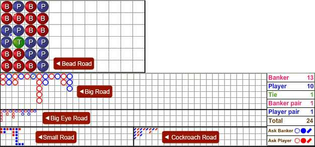
1. Record Results
Red beads represents banker, blue beads represents Player. Banker pairs are shown as a red circle placed on the top left corner of the bead; Player pairs are shown as a blue cirlce placed on the bottom right of the bead. If both red and blue circles appear on one bead, both Player and Banker have pairs in that round.
2. Big Road
The icons in this roadmap are shown as hollow cirlces. Bankers are in red, Players are in blue. The icons are arranged such that the Banker and Player icons are arranged on separate columns, or streaks. Each time the result flips between Banker and Player, a new column is used. Tie results are shown as a green stripe, embedded inside the cirlce of the last round. If there are more than 1 consecutive tie results, the number of ties will be written on the stripe.
3. Big Eye Road
Big eye road is derived from Big Road. Every time a Banker or Player bead is added to the Big Road, a derived bead is added to this roadmap. Analysis of this roadmap starts from column 2, row 2. If there is no result at this point, analysis will start from column 3, row 1 Refer to image below:
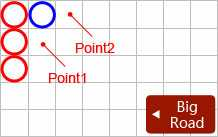
The starting point for this roadmap is point 1 (column 2 and row 2). If there is no result, then the starting point moves to point 2( column 3 and row 1).
●Big Eye Road rules for placing blue beads:
1. Go down
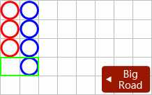
Based on the latest results of Big Road, comparing the position of current result with previous column, if there is no record in the previous column on the same row, then a blue circle is drawn.
2. Change column
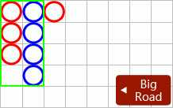
Based on the latest results of Big Road, comparing previous 2 columns, if both columns number of records are not the same, then a blue circle is drawn.
●Big Eye Road rules for placing red beads:
1. Go down
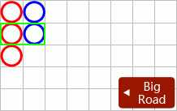
Based on the latest results of Big Road, compare current column and row with previous column and row. If previous column and row contains result (Banker/Player), then a red circle is drawn.
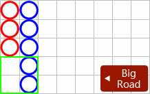
Based on the latest results of Big Road, compare the number of records in current column with previous column. If current column number of records is more than 2 of previous column, then a red hollow circle is drawn.
2. Change column
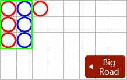
Based on the latest results of Big Road, compare the number of results in previous 2 columns. If both columns are the same, then a red hollow circle is drawn.
4. Small Road
Small Road is derived from Big Road. Every time a Banker or Player bead is added to the Big Road, a derived bead is added to this roadmap. Analysis of this roadmap starts from column 3, row 2. If there is no result at this point, analysis will start from column 4, row 1.
Refer to image below:
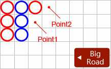
The starting point for this roadmap is point 1 (column 3 and row 2). If there is no result, then the starting point moves to point 2( column 4 and row 1).
●Small Road rules for placing blue circles:
1. Go down
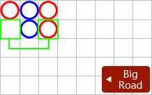
Based on the lastest results of Big Road, comapre results from prevuious 2nd columns from current column. If no record, then a blue circle is drawn.
2. Change column
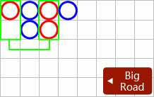
Based on the latest results of Big Road, comparing the the number of results with the previous column and the previous 3rd column from the current column. If the number of results are not the same, then a blue circle is drawn.
●Small Road rules for placing red circles:
1. Go down
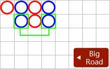
Based on the latest results of Big Road, comparing the number of results from the previous 2nd column from current column and current column. If have results (Banker/Player) then a red circle is drawn.
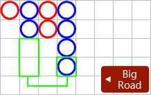
Based on the latest results of Big Road, comparing number of records in current column and previous 2 columns. If current column has 2 records more than previous 2nd column a red circle is drawn.
2. Change column
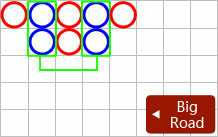
Based on the latest results of Big Road, comparing the number of results in the previous colunm and previous 3rd column, If the number of results are the same, then a red circle is drawn.
5. Cockroach Road
Cockroach Road is derived from Big Road. Every time a Banker or Player bead is added to the Big Road, a derived bead is added to this roadmap. Analysis of this roadmap starts from column 4, row 2. If there is no result at this point, analysis will start from column 5, row 1.
Refer to image below:
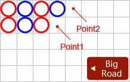
The starting point for this roadmap is point 1 (column 4 and row 2). If there is no result, then the starting point moves to point 2( column 5 and row 1).
●Cockroach Road rules for placing blue slanted line:
1. Go down
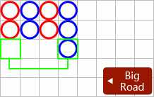
Based on the latest results of Big Road, comparing the position of current result in current column to previous 3rd column, if no record, then a blue slanted line is drawn
2. Change column
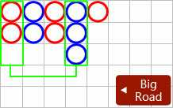
Based on the latest results of Big Road, comparing the number of records in previous column and previous 4th column, if not the same then a blue slanted line is drawn.
●Cockroach Road rules for palcing red slanted line:
1. Go down
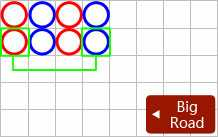
Based on the latest results of Big Road, comparing the position of current result in current row and column to previous 3rd column. If have record then a red slanted line is drawn.
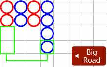
Based on the latest results of Big Road, comparing the number of results in current column to number of results in previous 3rd column, If current column number of results is 2 or more than previous 3rd column, the a red slanted line is drawn.
2. Change column
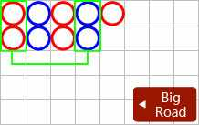
Based on the latest results of Big Road, comparing the number of results in previous column to previous 4th column, if same number of results then a red slanted line is drawn.
6. Roadmap Probing (ask Player, ask Banker)
Roadmap probing is a way to further help the players analyze the roadmaps. It shows what the next icon will be added to Big Road, Big Eye Road, Small Road, and Cockroach Road if the next round is Banker or Player. Roadmap probing helps players to predict the outcome of the next round.
Refer to image below:
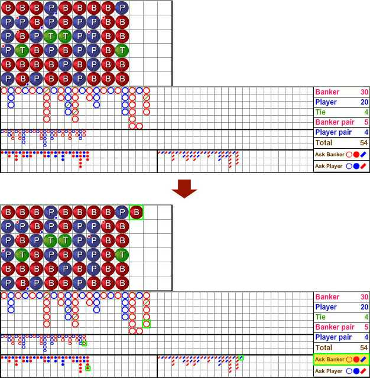
Simulate next round result is Banker or Player